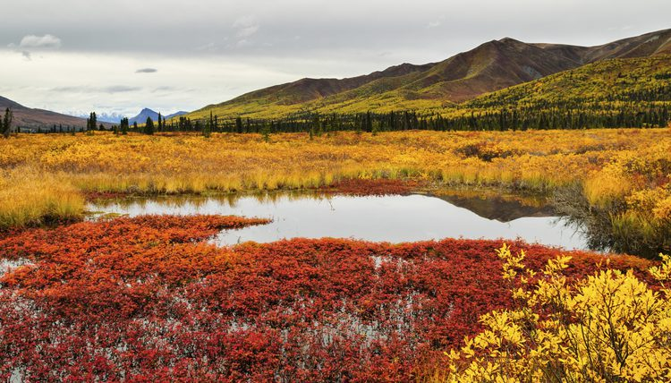
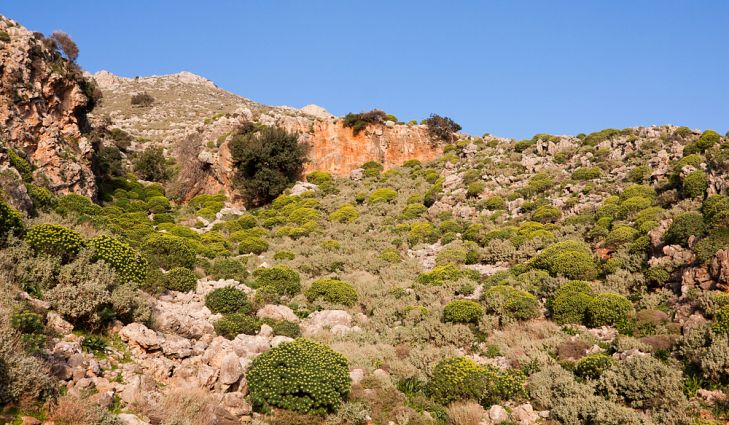
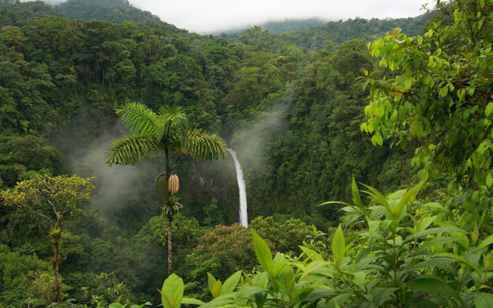
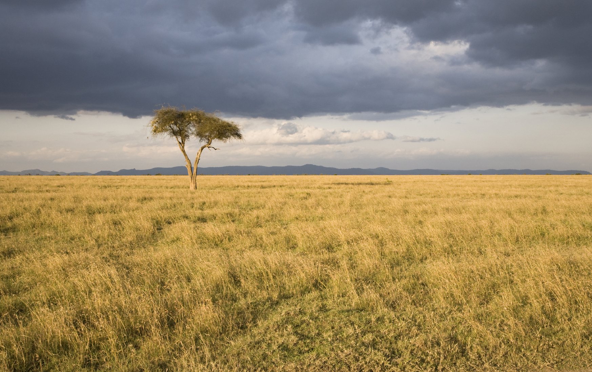
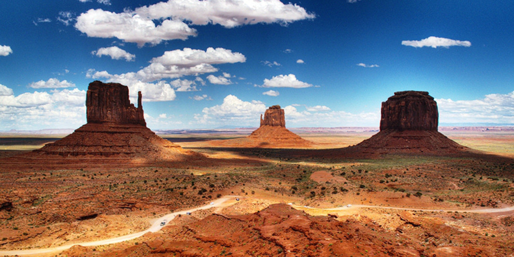
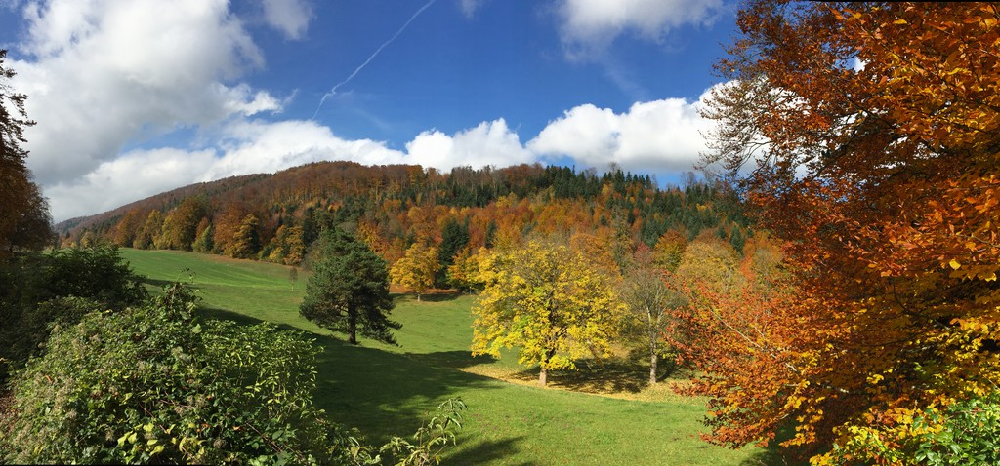
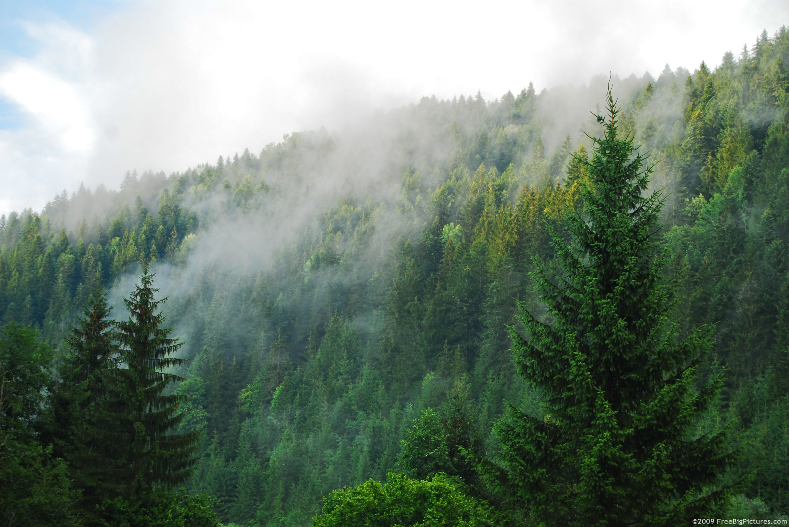

Basic html Content Page
Earth's Different Environments!
Earth's Different Environments!
The Earth has 7 major Environments in the world. Those 7 include the Tundra, Shrubland,
Rainforest, Grassland, Desert, Temperate Deciduous Forest, Coniferous Forest.
➢ The Tundra environment makes up about 20% of Earth’s land. It is the coldest and driest environment on our planet.
➢ The Shrubland environment has a hot and dry climate with little rainfall during the summer and cooler during the winter.
It is made up of short trees throughout.
➢ The Rainforest environment is a very moist area surrounded by many trees and all kinds of plants.
➢ The Grassland environment has both warm summers and cold winters. There isn’t much rainfall causing not many trees to grow
but grass is found all over the place.
➢ The Desert is another environment making up about 20% of Earth’s land. It experiences the least amount of rain. Both plants
and animals living here have adapted to the dry environment.
➢ The Temperate Deciduous Forest environment goes through all 4 seasons on Earth. It has warm summers and cold winters with
many different trees and plants growing in the area.
➢ The Coniferous Forest environment have very long colder winters with shorter and warm summers. Evergreen trees are very
commonly found here.
